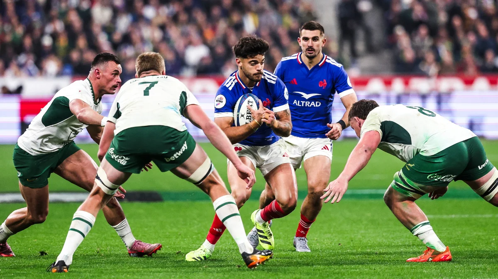

Accueil
Règles
Histoire
Les actualités de la semaine
A l'affiche

FRANCE vs AFRIQUE DU SUD Samedi 8 novembre 2025 –
Score final : France 17 – Afrique du Sud 32
Les Sud-Africains, réduits à 14 joueurs après l’expulsion de Lood de Jager, ont renversé le cours du jeu en seconde période.
Victoire Bleue sur le Pacifique :
Le XV de France domine les Fidji (34-21)
Dans un match où le rythme fut intense, le XV de France a confirmé sa bonne forme en s'imposant face à une vaillante équipe des Fidji sur le score de
34 à 21
.
A propos